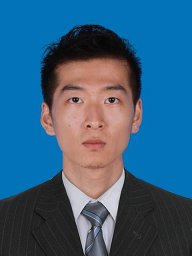

|  |
Ju Ren, Ph.D. 张焱 |
Depart. of Computer Science and TechologyTsinghua UniversityAddress: FIT 3529, Shuangqing Road, Tsinghua University, Beijing, 100084 China
Email: zhangyan_cau@163.com
Industry Mentor at the School of Information and Electrical Engineering, China Agricultural University
|